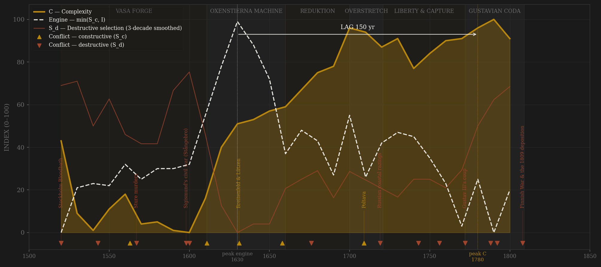
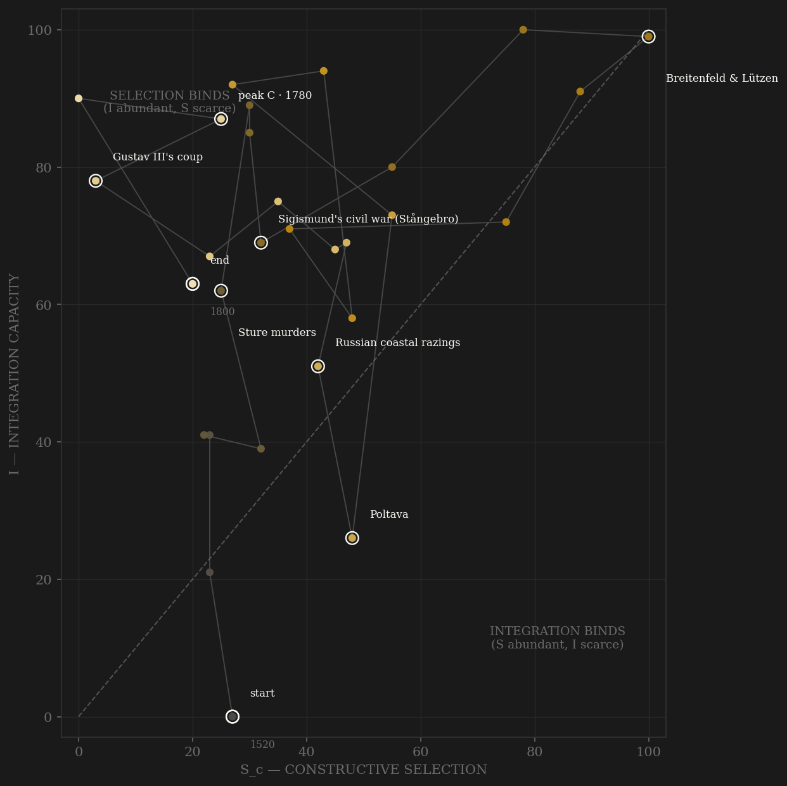

Sweden opens in blood it did not choose — the Stockholm Bloodbath beheads the old elite in its own capital, and Gustav Vasa builds the successor state from the parish up: the church estate confiscated by estate decision at Västerås, a cameral administration that audits every bailiff, and a Riksdag with a peasant estate no other European polity would seat. The engine — min(S_c, I) — climbs through the Oxenstierna machine and peaks in the 1630s: the 1634 Form of Government running an empire through collegial boards for a child queen, while the army that died with its king at Lützen makes Sweden a first-rank peer contestant on French subsidies. Both definitions agree on the decade — the constitution and the war peaked together. Then the rare event: where every other polity in the roster lets its elite convert office into annuity, Charles XI's reduktion claws the alienated crown estate BACK — the counter-example ledger entry — and the indelningsverket turns the recovered land into the deepest fiscal-military integration in Europe per capita. The empire spends that capital in one generation: the Great Northern War kills perhaps 200,000 subjects of a two-million realm, the plague takes a third of Stockholm, and the Russian galleys burn the coast from Norrköping to Umeå. What follows is the strangest divergence in the sample. The Age of Liberty makes the Riksdag sovereign — Hats and Caps alternate by election, the press act of 1766 is the world's first — channel C at its roster peak; and in the same decades French and Russian silver purchases the offices, the votes and the wars: channel A corrupted by EXTERNAL money, a variant no other polity shows. Complexity never notices. It rides iron exports, near-universal reading measured in the church examination registers, and from 1749 the Tabellverket — the world's first national population statistics — to a century-long plateau that peaks at the century's end, 150 years after the engine. The lag sits exactly on the window's edge, and honestly reported it straddles it: the smoothed C peak ties 1780/1790, and the unsmoothed read gives +160. Sweden passes by a coin-flip and the coin is shown.

The trajectory enters at the bottom of both axes — the Bloodbath decade, coordination improvised from rebellion — and climbs the integration axis through the Vasa cameral state before selection catches up in the 1620s–30s: the path crosses into the balanced upper-right exactly when Oxenstierna's colleges and the Thirty Years War intervention coincide, and it holds near the top-right corner through the 1640s. The reduktion decade (1680s) is the diagnostic excursion: integration surges to its imperial maximum while measured contest FALLS — the estates had just voted absolutism into being — so the path runs up the left wall: a state at peak coordination with its politics deliberately switched off. Poltava's decade then tears integration down while Charles XII's war holds B at its cap, and the Age of Liberty walks the path back out along the selection axis — C-channel contest at roster peak with integration merely recovering. The terminal geometry is the finding: from the 1760s the path walks DOWN the selection axis while integration holds near 80 — the same rentier staircase as the Dutch, but here the closure agent is foreign subsidy and then a king's coup, not a written cartel. At peak C (1790s) the binder is SELECTION at maximum depth: Sc 0 against I 90 — the widest selection deficit at peak complexity anywhere in the roster. The polity dies severed, not spent: 1809 cuts away Finland and the path simply stops mid-wall.
Coded by locus and target, never by outcome. Sweden supplies two locus demonstrations the roster needs. First, Poltava: the worst military catastrophe in Swedish history scores as CONSTRUCTIVE selection, because the army died in Ukraine — the field disaster was a peer contest lost abroad, and the core stood untouched until the razings of 1719–21, which score S_d because the galleys burned the realm's own coast. Locus, never outcome. Second, the bloodless S_d series: the Sture murders and Linköping are crowns attacking their own elite with the axe, but 1772 and 1809 attack the constitution with garrisons and no blood at all — coded S_d-lite at honest low amplitudes, because the target (the polity's own coordination machinery) is what codes, not the body count. Sigismund's invasion is the mirror case: an external army under the crowned king of Sweden is a civil war by definition — the locus is the constitution itself.
| YEAR | CONFLICT | CODE | CODING RATIONALE |
|---|---|---|---|
| 1520 | Stockholm Bloodbath | Sd | 80+ nobles, bishops and burghers beheaded in their own capital by Christian II — the founding trauma; the liberation war that follows is fought on core soil |
| 1543 | Dacke war | Sd | The largest peasant rising in Swedish history — Småland in arms, royal armies beaten in the forests; core province, core locus |
| 1563 | Northern Seven Years' War | Sc | The crowns' first full peer contest with Denmark-Lübeck — naval battles off Öland, border devastation; frontier locus |
| 1567 | Sture murders | Sd | Erik XIV stabs Nils Sture in Uppsala castle and has the council lords murdered — the crown attacking its own high elite; the king deposed by his brothers within the year |
| 1598 | Sigismund's civil war (Stångebro) | Sd | The crowned king of Sweden invades the government of Sweden — external army, internal locus: civil war by definition; the Club War's peasant slaughter in Finland the same conflict |
| 1600 | Linköping Bloodbath | Sd | Erik Sparre and the council aristocracy beheaded after a show trial — Charles IX eating the council; purges run through the decade |
| 1611 | Kalmar War | Sc | Denmark takes Kalmar and Älvsborg — frontier fortresses lost, machinery intact (Hannibal rule); the ransom is E, not S_d |
| 1631 | Breitenfeld & Lützen | Sc | The Thirty Years War intervention's apex — the king dies in battle ABROAD 1632: peer contest at maximum, B by locus; the machine runs the war for sixteen more years without him |
| 1658 | Crossing of the Belts / Roskilde | Sc | The army marches over the frozen sea; Scania, Blekinge, Halland annexed — the territorial apex of the peer contest |
| 1676 | Scanian War — Danish army in Scania | Sd | Annexed core province penetrated — Lund 1676 the bloodiest battle in Nordic history, snapphane guerrilla and reprisal: Adrianople rule; the Pomeranian front of the same war stays S_c |
| 1709 | Poltava | Sc | The army dies in Ukraine, the king flees to Bender — a field catastrophe ABROAD: B by locus, the core untouched. Locus, never outcome — the roster's sharpest demonstration |
| 1719 | Russian coastal razings | Sd | The galley fleet burns the east coast from Norrköping to Umeå, Stockholm's approaches raided 1719–21 — the core itself, S_d edge of the same war whose battles scored B |
| 1743 | Dalecarlian rising (Stora daldansen) | Sd | A peasant army marches on Stockholm and is shot down in Gustav Adolfs torg; the Hats' Russian war it protested scored B, Finland's occupation its S_d edge |
| 1756 | Court coup attempt | Sd | The royalist plot against the constitution crushed by the estates' own tribunals — Brahe and seven beheaded: the constitution answering with the axe |
| 1772 | Gustav III's coup | Sd | The Guards secure Stockholm and the estates vote the new Instrument at bayonet-point — BLOODLESS, coded S_d-lite (4/10): the target is the constitution, the body count zero; honesty in amplitude |
| 1788 | Anjala conspiracy | Sd | The officer corps in Finland mutinies against its own war and treats with Russia — the army attacking the war-making machinery; one execution |
| 1792 | Gustav III assassinated | Sd | Anckarström's shot at the masked ball — an aristocratic conspiracy kills the king who broke the nobility: internal locus, the head of state the target |
| 1808 | Finnish War & the 1809 deposition | Sd | Russia conquers Finland — a third of the realm's people, core territory for five centuries (Alaric rule) — and the army deposes the king, bloodlessly: terminal S_d, the realm halved |
| COMPONENT | GRADE | BASIS |
|---|---|---|
| S_c A — Elite-entry (0.40) | ○ scholar-coded | No measured entry corpus exists (the coded gap is stated — British precedent). Coded from Roberts (The Swedish Imperial Experience; The Age of Liberty), Upton (Charles XI and Swedish Absolutism chs. 3–5). Anchors: Västerås confiscation 1527 opening service careers; the 1634 Form of Government's collegial-meritocratic intake (the showcase); university expansion (Uppsala revived 1624, Lund 1666); the 1680 precedence ordinance + REDUKTION = the roster's rare ANTI-rentier event — elite capture REVERSED by the crown; DECAY: Hats/Caps purchasing offices with French/Russian/British subsidy money — channel-A corruption by EXTERNAL money, unique variant; 1772 re-closure from above; the 1789 act opens offices to commoners while killing the constitution (both movements coded) |
| S_c B — External rivalry (0.30 cap) | ○ scholar-coded | War-years ordinal, locus-cleaned: Danish wars, Polish/Russian Livonian wars, Thirty Years War intervention 1630–48 = apex (Breitenfeld/Lützen), Charles X's Deluge, Great Northern War INCLUDING Poltava 1709 (field catastrophe abroad = B by locus). Excised to S_d: Sigismund 1598, the 1719–21 razings, Finland 1808–09. This channel alone = the frozen Sc_v1_combat column |
| S_c C — Internal within-rules (0.30) | ○ scholar-coded | THE RIKSDAG FOUR-ESTATE SYSTEM — the C showcase of the roster: estate bargaining continuous 1527–1809 with a peasant estate no peer polity seats; Uppsala Synod 1593 (the confession decided by assembly against the king); the 1650 commoner-estates assault on noble privilege; the estates voting absolutism 1680–93 (contest liquidating itself); AGE OF LIBERTY 1719–72 = channel peak — parliamentary supremacy, Hats/Caps alternation BY ELECTION (1738, 1765, 1769), press act 1766 the world's first — C PEAKS WHILE A DECAYS under subsidy money: the divergence is the finding (Roberts, Age of Liberty; Metcalf, The Riksdag) |
| S_d — Destructive | ○ scholar-coded | Locus-and-target ledger: 1520 Bloodbath, Dacke 1543, Sture murders 1567, Sigismund 1598–99 + Linköping 1600, Scania 1676–79, razings 1719–21, Dalecarlia 1743, 1756 plot, 1772 coup (bloodless — coded 4/10), Anjala 1788, assassination 1792, 1808–09 terminal. Per-decade rationales in data/raw/sweden/coding_ledger_v2.csv |
| I — Integration | ◐ measured (0.35) + ○ coded (0.65) | Sound Toll passages/yr 0.35 (MEASURED — local ~/history-panel/soundtoll/annual_index.csv, all-flags totals = the Baltic trade arc; Swedish ships EXEMPT from dues 1645–1710 so flag-level counts are a treaty artifact — the all-flags series used deliberately, flagged; pre-1560 registers patchy → masked, coded strand carries). Coded 0.65: Vasa fogde cameral system, Svea hovrätt 1614, the 1634 college/län grid, Riksbank 1668 (first central bank), INDELNINGSVERKET (Glete, War and the State ch. 5 — army and navy on permanent land registers), Karlskrona 1680, the 1686 Church Law's parish information system → TABELLVERKET 1749 (world's first national population statistics), Jernkontoret 1747 |
| C — Complexity | ◐ measured + anchors | Skipna mean: Maddison/Schön–Krantz GDPpc (annual 1520–1800, measured reconstruction); Stockholm population (Lilja/Chandler anchors, 7k→76k); literacy (OWID anchors spliced to Johansson 1977 church-examination reading series — near-universal reading by the 1700s, register-measured ◐; splice flagged); export industry = Falun copper (MEASURED, Lindström: 2,850 t/yr 1620s → 450 t 1800) averaged with bar-iron anchors (Heckscher ch. 4: 2kt→48kt) — the copper-to-iron handoff is the real export structure |
| E — Entropy / R — Population | ○ coded + measured anchors | E ordinal with cited anchors: Älvsborg ransoms 1571/1613–19, kopparmynt chaos, Stockholms Banco collapse 1668, GREAT FAMINE 1695–97 (a quarter to a third of Finland dead, parish-measured), plague 1710–13 + Görtz token coinage + ~200k war dead of ~2M = the empire bankrupting its demography, Age-of-Liberty daler emissions and the 1765–67 deflation crunch, famine 1771–72 (Tabellverket-measured death spike), terminal 1808–09. R = Sweden proper in raw millions (Finland NOT included — flagged); post-1749 = Tabellverket, the world's first measured national population (◐→●) |
29 decade rows (1520–1800) built from local data by scripts/build_sweden_sicre.py (2026-07-06), STRAIGHT to S_c definition v2 (contestability composite 0.40/0.30/0.30, AMENDMENT_S_definition_v2.md); per-decade channel scores and rationales in data/raw/sweden/coding_ledger_v2.csv, component audit in components_audit.csv, source grading in SOURCES.md. BOTH DEFINITIONS REPORTED per the amendment: v2 contestability engine 1630 (the Form-of-Government/Breitenfeld decade) → C 1780 = +150 PASS; v1 external-war-only engine 1630 → C 1780 = +150 PASS — the definitions agree. KNIFE-EDGE, shown not hidden: smoothed C ties EXACTLY 1780/1790 (95.67 both; idxmax takes the earlier row) and the later tie-break gives +160 LONG; UNSMOOTHED peaks (1630 → 1790) give +160 LONG under both definitions — read the verdict as PASS at the window's edge, LONG under either perturbation (Gupta/Yuan tie precedent). C is a 1700–1800 plateau (smoothed spread <9 points; secondary peak 1710 rides the Maddison 1700s spike). Frozen protocol throughout: 3-decade centered rolling mean, engine = min(S_c, I). R covers Sweden proper — Finland (~⅓ of the realm to 1809) excluded from the population series; its catastrophes are carried in E. Sound Toll all-flags caveat and the Swedish dues exemption 1645–1710 flagged in I_notes. Rebuild: build_sweden_sicre.py, then polity_report.py --slug sweden.